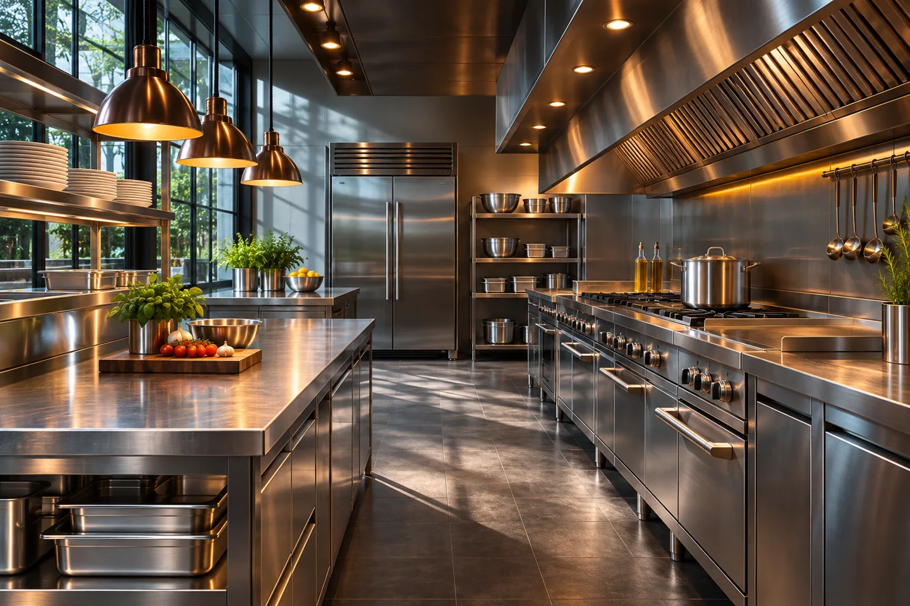

Cozinhas profissionais
Do preparo à expedição.
Encontre os equipamentos por etapa de operação e reúna os itens para cotar com a equipe comercial.
Explorar catálogo ↓
Monte sua lista.
Teste a busca, selecione equipamentos e ajuste as quantidades. A lista pode ser baixada para conferência.